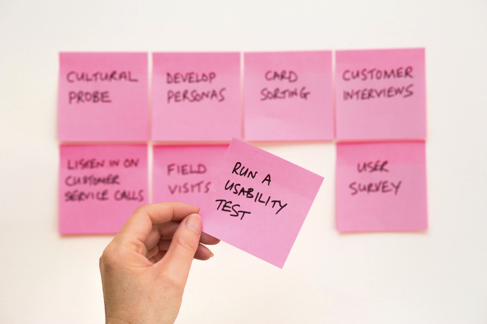
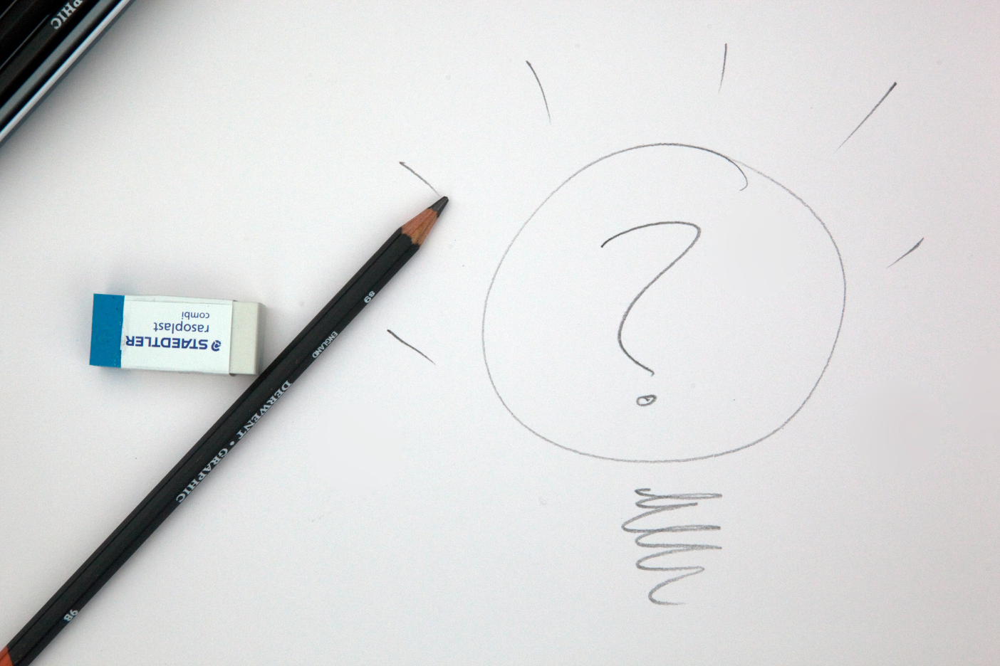
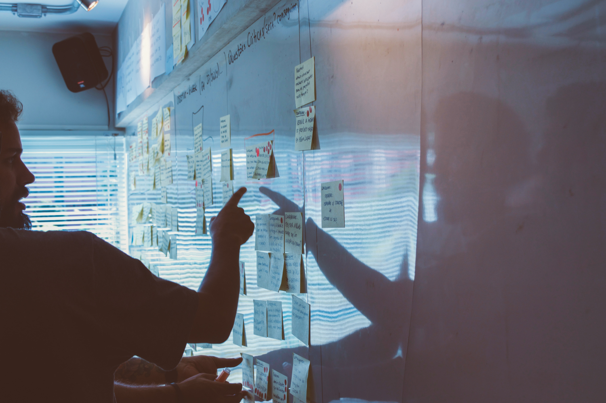

Introduction to UX research
Effective design requires an understanding of how people who will use and interact with our creations and products— users— think and behave, and what they desire. This is so that we can design tools and solutions that users find useful for problem solving, as well as meet their various needs and goals. The last thing we want is to design something we think users will find useful, but really isn’t. We want to meet real needs and solve real world problems. But how do we know what users really need and want?
Rather than mere guesswork, which risks precious time, effort and resources, we can attain a deeper level of understanding through UX research.

What’s UX Research?
How does UX Research fit into all this, and what is it exactly? Let’s start with User Experience, or UX, which you might already have heard of. The UX team works to improve a user’s experience of a product or service, taking into account user needs and goals, as well as business goals that need to be met.
Prototypes are tested with users to obtain feedback, and this feedback is then used to measure how well the solution has done with regards to meeting the user’s needs and goals. The prototype is updated with this feedback in mind, and improvements are made on an iterative basis- a repeated, ongoing process that any Product team member is likely to be familiar with!
First of all, research is conducted in the beginning of the product development process to understand the users, context and problem, so that we have enough information to think about directions for potential solutions. Relevant questions to think about include: Are we paying attention to the important factors? What are the possibilities being considered, and is there anything crucial we’re missing out? Is there the risk that our product will become a white elephant in the existing ecosystem—something that won’t fit nicely into our users’ workflows, something that users don’t really need?
Is there the risk that our product will become a white elephant in the existing ecosystem—something that won’t fit nicely into our users’ workflows, something that users don’t really need?
Generally, other forms of research such as competitive research might not always fall strictly under the UX umbrella. However, in a place like Holmusk, the UX team doesn’t just conduct research with the users; competitive research and more general forms of market research are also done when it comes to evaluating next steps and actions to take, answering questions about what would make the most sense for the company from a business or strategic standpoint, and how Holmusk could make use of the data it already has. The UX team in Holmusk thus also seeks to help with the answering of questions outside the traditional scope of user research.
For example, when I was a UX Research Intern at Holmusk, I helped the Product Team by conducting research to determine the direction of a new product. We wanted to understand what it was that ought to be built next. We already had certain ideas and objectives, alongside a few assumptions, but we needed to test these out with research to validate them. On top of user research, we also did market research and gathered information from professionals adjacent to our target users and professionals both in-house at Holmusk and beyond, in the pharma and healthcare industry overall.

Research isn’t just something that happens to determine the direction of the product, a process that ends after an idea or solution has been selected. It is also done as the product is being built, so that the product can be continuously updated, refined and improved based on user input and additional information or insights derived from the research.
Even after the product is launched, research is conducted to gather feedback for further improvements because users’ needs and expectations as well as the larger ecosystem may change. It’s important to adapt quickly to be on top of relevant trends and changes, which helps to ensure that the solution is up to date and relevant. This is especially the case in the healthcare ecosystem, with its changing regulations and sensitivities, which require extra attention. All this happens concurrently with the design process, which is also why certain people in the design field use the term “design research” interchangeably with UX Research.
The UX Research process
Ask the right questions: Define research scope
- What do we want to research on, and how do we obtain the relevant information?
- Who are our target users, first and foremost?
Knowledge of the users’ mindsets and differing workflows will help to determine ways to meet their needs and address pain points. Other than the target group, also consider studying other teams and professionals that work alongside that target group and talking to other professionals who know a lot about the target group.
Critically observe: Collect data
In terms of data collection from users, there are many techniques and tools that can be used. You could collect quantitative data via a Likert scale to gauge the strength of your user’s thoughts and feelings regarding any aspect of your product. Or you could collect open ended responses to make it a qualitative study. UX Researchers can also conduct user interviews and have conversations where one can go deeper into underlying factors with the users. Rather than gauging the magnitude of your users’ opinions through questions, researchers can also conduct observational studies to observe body language, reactions and how your users interact with your product. Lastly, decide which platforms, online or otherwise, would be best preferred for the hosting of questionnaires and interviews.
Uncover patterns: Examine/analyze results
Consolidate all the information received and look for connections. You can use certain types of techniques to organize the process of analysis, such as creating user personas or doing affinity mapping.

Behind the Scenes
During my internship, I helped with creating a questionnaire on UserTesting, an online platform which crowdsources potential research participants from different populations and occupations, allowing users from all over the world to participate in user research studies anonymously. There’s a variety of user testing methods that can be used through the platform, such as questionnaires, prototype testing and video interviews.
Before the questionnaire was released, the research team vetted the questions together to make sure that the questions were relevant and to the point. I learnt that this was particularly important so as to prevent participants from getting bored and tired from having to wade through long-winded questions.
For this particular round of user research, the questionnaire required verbal responses from the participants’ end. After consolidating the information gathered, the team then proceeded to create personas for potential types of users. This process involved identifying common patterns, making connections and drawing insights across the different personas. We were also able to get a better sense of which concerns we ought to focus more on, and which weren’t as relevant or were outside the immediate scope for the present round of research.
One thing to note about the UX Research process is that it’s never linear! It’s common to find yourself going through the Steps 1/2 again and again to further refine features in the UX design process. Communication with your team is very important here; jot down notes and keep track of the ongoing changes so that everyone is kept in the loop and understands what’s going on at all times.
Part 2 talks about UX Research in the context of the healthcare industry!